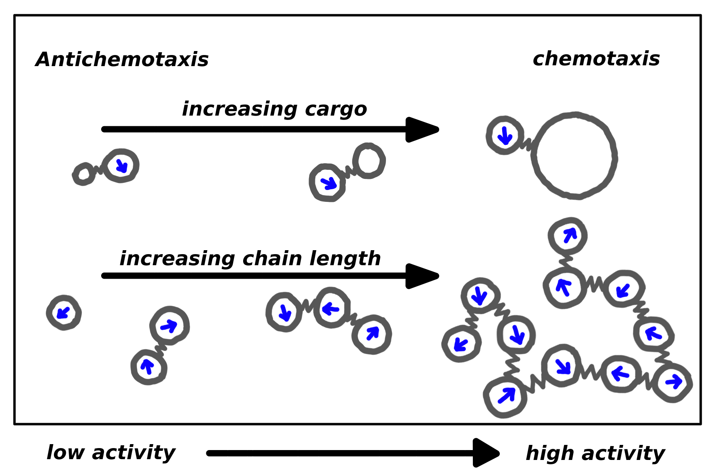

Aactive particles with their characteristic feature of self-propulsion are regarded as the simplest models for motility in living systems.
The accumulation of active particles in low activity regions has led to the general belief that chemotaxis requires additional features and at least a minimal ability to process information and to control motion.
We show that self-propelled particles display chemotaxis and move into regions of higher activity if the particles perform work on passive objects, or cargo, to which they are bound.
The origin of this cooperative chemotaxis is the exploration of the activity gradient by the active particle when bound to a load, resulting in an average excess force on the load in the direction of higher activity.
Using a new theoretical model, we capture the most relevant features of these active-passive dimers, and in particular we predict the crossover between antichemotactic and chemotactic behavior.
Moreover, we show that merely connecting active particles to chains is sufficient to obtain the crossover from antichemotaxis to chemotaxis with increasing chain length.
Such an active complex is capable of moving up a gradient of activity such as provided by a gradient of fuel and to accumulate where the fuel concentration is at its maximum.
The observed transition is of significance to protoforms of life, enabling them to locate a source of nutrients even in the absence of any supporting sensomotoric apparatus.
This work has been published in
PRL
(PDF).
For more details see research .